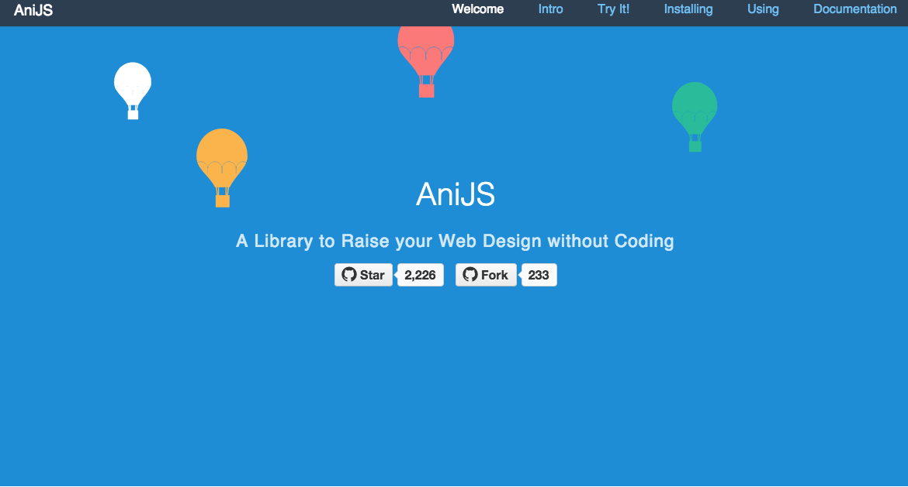

Rajmatie Arjune
Instructor: Eric Silvay
AniJS is a Declarative handling library for Animations
aniJS
Animation could be written by declarative commands right into HTML document.
Animation could be easily managed with declarations that express logic.
AniJS brings uniqueness to web design by providing:
Each part of aniJS sentence calls a definition.
data-anijs="if: click, do: bounceIn, before: beforeAnimationFunctionName"
data-anijs="if: click, do: bounceIn, after: afterAnimationFunctionName"
data-anijs="if: click, do: bounceIn, after: afterAnimationFunctionName, helper: animationHelperInstanceName"
First download files from github
https://www.github.com/anijs/anijs
After downloading aniJS, include these files in your code:
<input type="hidden"
data-anijs="if: mouseover, on: .tab, do: $removeClass active, to: .tab.active;
if: mouseover, on: .tab, do: $addClass active, to: target">
<h4>TAB BAR</h4>
<div class="tab-bar">
<h2 class="tab"> You Tube</h2>
<p><i class="fa fa-lg fa-youtube-square bounceInUp animated"></i></p>
<h2 class="tab active">Facebook</h2>
<p><i class="fa fa-lg fa-facebook-square bounceInRight animated"></i></p>
<h2 class="tab">Instagram</h2>
<p><i class="fa fa-lg fa-instagram bounceInRight animated"></i></p>
<h2 class="tab">LinkedIn</h2>
<p><i class="fa fa-lg fa-linkedin-square rollIn animated"></i></p> <
<div class="accordion"
data-anijs="if: click, on: .heading, do: $removeClass open,
to: .open; if: click, on: .heading, do: $toggleClass open,
to: $parent target;">
<div class="item" data-anijs="if:mouseenter,
on: .heading, do: bounceInRight animated, to: $children target">
<div class="heading red">
<i class="fa fa-youtube-square"></i>
<span>You Tube</span>
<i class="fa fa-chevron-circle-down"></i>
</div>
<div class="content">
<a href="https://www.youtube.com/">You Tube</a>
</div>
</div>
<div class="item">
<div class="heading blue">
<i class="fa fa-facebook-square"></i>
<span>Facebook</span>
<i class="fa fa-chevron-circle-down"></i>
</div>
<div class="content"><a href="https://www.facebook.com/">Facebook</a></div>
</div>
<div class="item">
<div class="heading brown">
<i class="fa fa-instagram"></i>
<span>Instagram</span>
<i class="fa fa-chevron-circle-down"></i>
</div>
<div class="content"><a href="https://www.instagram.com/">Instagram</a>
</div>
<div class="item">
<div class="heading blue1">
<i class="fa fa-linkedin-square"></i>
<span>LinkedIn</span>
<i class="fa fa-chevron-circle-down"></i>
</div>
<div class="content"><a href="https://www.linkedin.com/">LinkedIn</a>
<input type="hidden" @{meta('title', 'description', 'keywords')} >
<div id="main" data-anijs="if: load, on: window, do: bounceInRight
animated, after: remove ">
<img src="images/images/boy.jpg"></div>
If you're interested in learning more about AniJS
here are some useful links:
http://anijs.github.io/
https://github.com/anijs/anijs